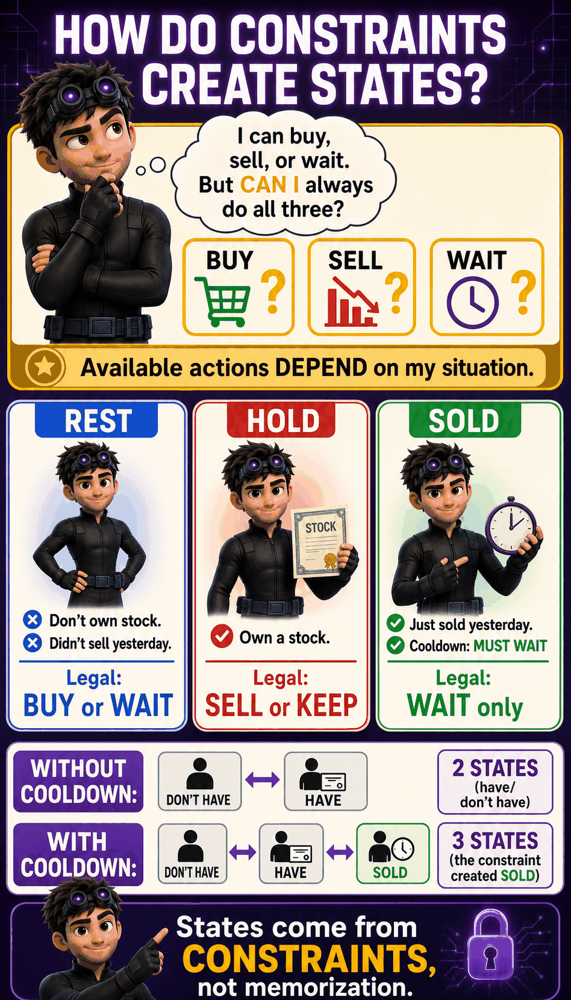
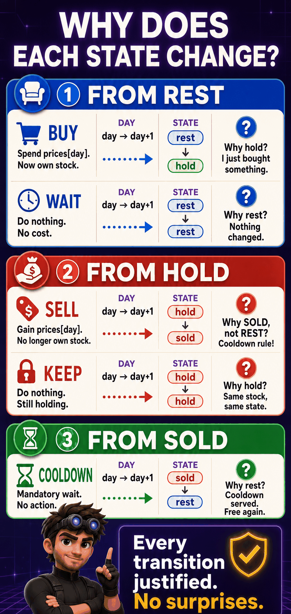
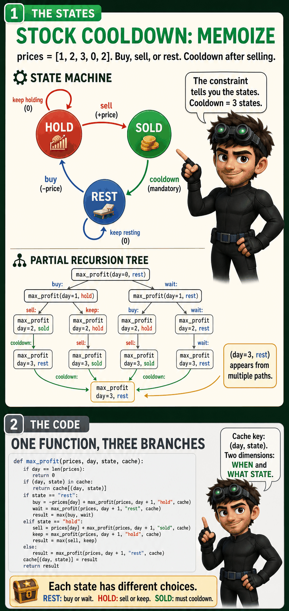
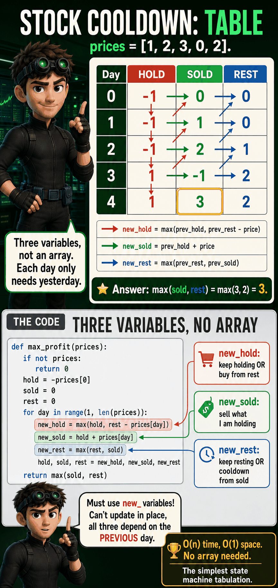
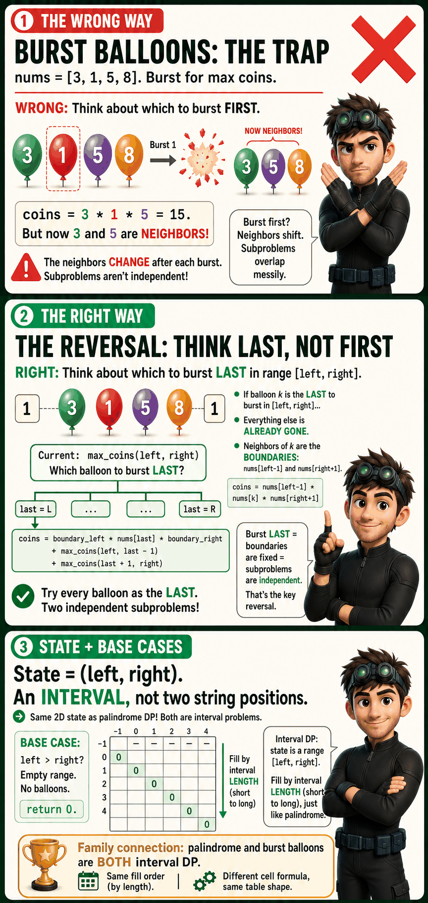
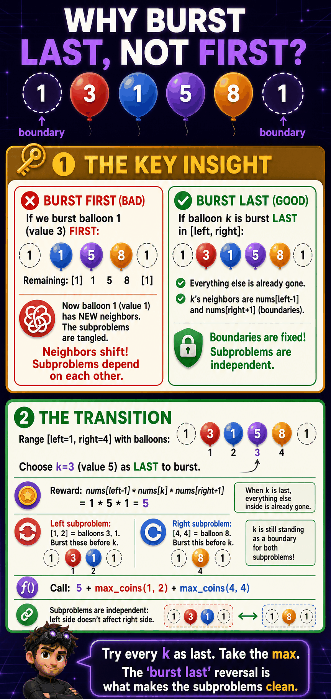
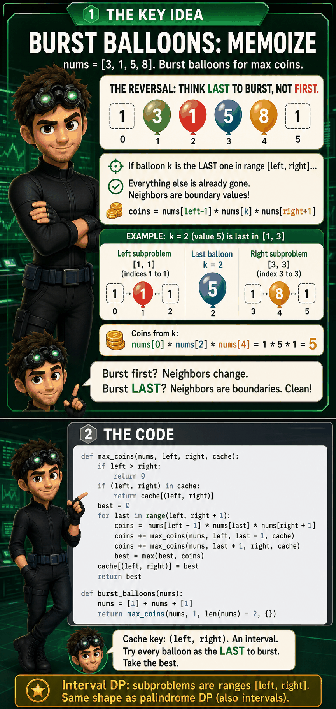
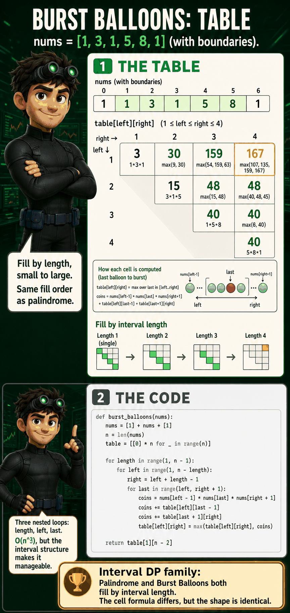

The Problem
Best Time to Buy and Sell Stock with Cooldown (LeetCode #309)
You have stock prices for each day. You can buy, sell, or rest. After selling, you must wait one day (cooldown) before buying again. Maximize profit.
prices = [1, 2, 3, 0, 2]
Best strategy: buy day 0 ($1), sell day 1 ($2), cooldown day 2, buy day 3 ($0), sell day 4 ($2). Profit = (2-1) + (2-0) = $3.
0 Is This a DP Problem?
What is the problem asking me to compute?
Maximum total profit from buying and selling stocks, with a cooldown constraint after each sale.
Why doesn't greedy work?
Why it fails: The cooldown constraint creates dependencies between transactions. Selling on day 1 means I cannot buy on day 2. So a locally optimal sell might prevent a globally optimal buy. I can't decide each day independently because today's action constrains tomorrow's options.
Why would brute force create overlapping subproblems?
Different sequences of buy/sell decisions can lead to the same situation (same day, same state). Example: "buy day 0, sell day 1, cooldown day 2" and "wait day 0, wait day 1, wait day 2" both arrive at day 3 in the REST state. Same remaining problem.
Which family?
State Machine DP. My available actions depend on what state I'm in. The constraint (cooldown) creates distinct states with different legal moves.
1 The Recursive Question
State it entirely in English before introducing variables:
The function answers one question: from this day forward, in this situation, what's the best I can do?
But what is "my current situation"? That's what I need to figure out next. I can't write the function signature until I know what state information matters.
2 Discover the Base Cases
0.
3 Discover the Choices
What is my current situation?
It's a particular day. I see today's stock price. I need to decide what to do today.
prices = [1, 2, 3, 0, 2]
What am I allowed to do?
The problem says three actions: buy, sell, or do nothing.
What am I forbidden from doing?
Why are these the only legal actions?
The problem defines exactly three actions (buy, sell, rest). But their availability depends on my current situation. That's different from knapsack where "grab or skip" is always available. Here, I need to know what situation I'm in before I can figure out my choices.
This means I must first discover the situations.
What situations can I be in?
Let me list every possible situation and ask: what's different about what I'm allowed to do?
→ I'm free. I can buy or wait. Two legal actions.
→ I'm holding. I can sell or keep holding. Two legal actions.
→ I'm in cooldown. The rule says I must wait. Zero choices. I can only wait.
These three situations are the states:

4 Explain Each Choice
Now I can derive the choices for each situation. In each state, I ask: "what actions are legal right now?"
Why is this legal? I don't own anything and I'm not in cooldown. Buying is allowed.
What changes immediately? I lose
prices[day] in cash. I now own a stock.What stays unchanged? Everything before today. Past profit is locked in.
What remains to solve? From tomorrow onward, maximize profit while holding.
-prices[day] + max_profit(day+1, "hold")
Why is this legal? Waiting is always legal.
What changes immediately? Nothing. No money spent, no stock acquired.
What stays unchanged? Everything. My state doesn't change.
What remains to solve? Same problem starting tomorrow.
max_profit(day+1, "rest")
max(buy, wait).Why is this legal? I own a stock. Selling is allowed.
What changes immediately? I gain
prices[day] in cash. I no longer own a stock.What stays unchanged? Past transactions. Their profit is locked in.
What remains to solve? Tomorrow I'm in SOLD (not REST!). Cooldown forces one day wait.
prices[day] + max_profit(day+1, "sold")
Why is this legal? Holding is always legal.
What changes immediately? Nothing. Still own the stock.
What stays unchanged? Everything.
What remains to solve?
max_profit(day+1, "hold")
max(sell, keep).max_profit(day+1, "rest")The Choice Diagram
Current Situation: It's day X. What state am I in?
│
┌────┼────────────┐
│ │ │
REST HOLD SOLD
│ │ │
│ ├─ Sell └─ Cooldown (mandatory)
│ │ +price state: sold → rest
│ │ state → sold
│ │
│ └─ Keep holding
│ +0, state stays hold
│
├─ Buy
│ -price
│ state → hold
│
└─ Wait
+0, state stays rest
Combine: max(choices) in each state.Watch it play out
Trace prices = [1, 2, 3, 0, 2], optimal path:
I'm free. Buy at $1. Cost: -$1. Tomorrow: HOLD.
I own a stock. Sell at $2. Reward: +$2. Tomorrow: SOLD.
Just sold. Must cooldown. No action. Tomorrow: REST.
Free again! Buy at $0. Cost: -$0. Tomorrow: HOLD.
Sell at $2. Reward: +$2. Done.
Notice how the state determined the legal actions at each step. On day 2 (SOLD), buying was forbidden even though the price was good. The cooldown constraint shaped the path.

5 Discover the State
What information must I know to uniquely describe the remaining problem?
6 State Invariant
Does every recursive call preserve this?
day+1. It never revisits a previous day. It never undoes a past transaction. The state (rest/hold/sold) fully captures the consequence of past actions without storing the full history.
Verification: When I call
max_profit(day+1, "hold"), I've already committed to buying on the current day. The buy cost is accounted for. The child call only needs to handle day+1 onward in the HOLD state. Invariant preserved.
7 Derive the Transition
State: max_profit(day, state). For each transition, justify the cost, the state change, and why.
-prices[day]. Money spent.day → day+1 (tomorrow), state: rest → hold (now own a stock).-prices[day] + max_profit(day+1, "hold")+0. No transaction.day → day+1, state stays rest.max_profit(day+1, "rest")max(buy, wait).+prices[day]. Money received.day → day+1, state: hold → sold (must cooldown next).prices[day] + max_profit(day+1, "sold")+0. No transaction.day → day+1, state stays hold.max_profit(day+1, "hold")max(sell, keep).+0. Just waiting.day → day+1, state: sold → rest (cooldown complete).max_profit(day+1, "rest")
8 Derive the Recurrence
Now the recurrence writes itself:
max_profit(day, state) =
0 if day == len(prices)
max(-prices[day] + max_profit(day+1, "hold"),
max_profit(day+1, "rest")) if state == "rest"
max(prices[day] + max_profit(day+1, "sold"),
max_profit(day+1, "hold")) if state == "hold"
max_profit(day+1, "rest") if state == "sold"The code
def max_profit(prices, day, state, cache):
if day == len(prices):
return 0
if (day, state) in cache:
return cache[(day, state)]
if state == "rest":
buy = -prices[day] + max_profit(prices, day + 1, "hold", cache)
wait = max_profit(prices, day + 1, "rest", cache)
result = max(buy, wait)
elif state == "hold":
sell = prices[day] + max_profit(prices, day + 1, "sold", cache)
keep = max_profit(prices, day + 1, "hold", cache)
result = max(sell, keep)
else:
result = max_profit(prices, day + 1, "rest", cache)
cache[(day, state)] = result
return result
max_profit(prices, 0, "rest", {})9 Memoization
Why does repeated work occur?
Different trading paths reach the same (day, state):
max_profit(day=0, rest)
buy: max_profit(day=1, hold)
sell: max_profit(day=2, sold)
cooldown: max_profit(day=3, rest) ─ ─ ─ ┐
keep: max_profit(day=2, hold) │
sell: max_profit(day=3, sold) │ SAME!
cooldown: max_profit(day=4, rest) │
keep: max_profit(day=3, hold) │
wait: max_profit(day=1, rest) │
buy: max_profit(day=2, hold) │
sell: max_profit(day=3, sold) │
cooldown: max_profit(day=4, rest) ─ ─ ─ ┘Which states repeat?
(day=3, rest) appears from multiple trading histories. "Buy day 0, sell day 1, cooldown day 2" and "wait day 0, wait day 1, wait day 2" both arrive at day 3 in REST. The future is identical regardless of how I got here.
How memoization removes repetition
(day, state) in cache3 states x n daysStart: day 0, state "rest"

10 Tabulation
Why the table dimensions come from the state
State = (day, situation). Day ranges from 0 to n-1. Situation is one of three values. But each day only depends on the previous day, so I just need three variables, not a full table.
Why the iteration order works
Every transition moves to day+1. If I fill from day 0 forward, every dependency (the next day's values) would need to be computed first. But I'm computing profit from day X onward, so I fill backwards from the last day (or I use the tabulation trick: track three running variables forward, where each day's values only depend on the previous day's values).
| Day | Price | HOLD | SOLD | REST |
|---|---|---|---|---|
| 0 | $1 | -1 | 0 | 0 |
| 1 | $2 | -1 | 1 | 0 |
| 2 | $3 | -1 | 2 | 1 |
| 3 | $0 | 1 | -1 | 2 |
| 4 | $2 | 1 | 3 | 2 |
Answer: max(SOLD, REST) at last day = max(3, 2) = 3. (Can't end in HOLD; you'd be stuck with unsold stock.)

Day 3 walkthrough: the buy-the-dip moment
max(prev_hold, prev_rest - price)max(-1, 1 - 0) = 1Buy at $0 with $1 rest profit!
prev_hold + price-1 + 0 = -1Selling at $0 loses money.
max(prev_rest, prev_sold)max(1, 2) = 2Yesterday's sold profit flows through.
11 Space Optimization
Which previous states are actually needed?
Each day only depends on the previous day's three values (hold, sold, rest). I don't need any day before that.
Why older states can be discarded
Three variables are enough. No array needed. O(1) space.
def max_profit(prices):
if not prices:
return 0
hold = -prices[0]
sold = 0
rest = 0
for day in range(1, len(prices)):
new_hold = max(hold, rest - prices[day])
new_sold = hold + prices[day]
new_rest = max(rest, sold)
hold, sold, rest = new_hold, new_sold, new_rest
return max(sold, rest)hold = -prices[0]sold = 0rest = 0new_hold = max(hold, rest - prices[day])new_sold = hold + prices[day]new_rest = max(rest, sold)return max(sold, rest)12 Pattern Recognition
What clues suggested this DP pattern?
What should I immediately think when I see a similar problem?
"Constraints restrict my actions based on recent history. Each distinct situation is a state. Each legal action is a transition." For any problem where today's options depend on what I did recently, think state machine DP.
What generalizes to future problems?
13 Common Mistakes
max_profit(day+1, "rest") after selling instead of max_profit(day+1, "sold"). Same bug as above, just in the transition instead of the state design.prices[0], so hold must start as -prices[0].max(sold, rest).
14 If I Forget Everything
If I forget this algorithm in six months, here's how I'd rediscover it from scratch:
The constraint created the states. The states determined the legal actions. The actions defined the transitions. The transitions wrote the recurrence. The recurrence revealed the overlap. The overlap justified memoization. Every step followed from the one before.
The State Machine Family
States + transitions. Each step, update every state from the previous step's states.
1 Longest Increasing Subsequence
▶[10, 9, 2, 5, 3, 7, 101, 18]Some increasing subsequences:
Answer: 4. No increasing subsequence of length 5 exists.
State:
lis_ending_at(index). Just one variable: which element I'm ending at.Why not start/end like palindrome? A subsequence can skip elements. The state is just where the chain currently ends.
nums[index]. I want to build the longest chain ending here.What can I do? Look at every previous element. If
nums[prev] < nums[index], I could extend that chain by appending my element.Why check ALL prev? Any smaller previous element could end the longest chain. I don't know which without trying all.
If no valid prev exists? Start a new chain of length 1 (just this element alone).

Transitions
prev by appending nums[index].+1. One more element in the chain.nums[prev] < nums[index]. The sequence stays strictly increasing.1 + lis_ending_at(prev)lis_ending_at(index) = 1. This element alone is an increasing subsequence of length 1.best = max(1, max(1 + lis_ending_at(prev) for valid prev))

Recursion
def lis_ending_at(nums, index, cache):
if index in cache:
return cache[index]
best = 1
for prev in range(index):
if nums[prev] < nums[index]:
best = max(best, 1 + lis_ending_at(nums, prev, cache))
cache[index] = best
return best
def longest_increasing(nums):
cache = {}
return max(lis_ending_at(nums, i, cache) for i in range(len(nums)))
Tabulation
def longest_increasing(nums):
n = len(nums)
lis = [1] * n
for i in range(1, n):
for prev in range(i):
if nums[prev] < nums[i]:
lis[i] = max(lis[i], lis[prev] + 1)
return max(lis)
2 Burst Balloons
▶nums[i-1] * nums[i] * nums[i+1] (product of it and its current neighbors). Maximize total coins. Boundaries are 1.nums = [3, 1, 5, 8] → with boundaries: [1, 3, 1, 5, 8, 1]One possible order:
Total: 15 + 120 + 24 + 8 = 167 (this happens to be optimal).
Key insight: Think about which balloon to burst LAST, not first. If balloon k is the last to burst in range [left, right], everything else is already gone, so its neighbors are the fixed boundaries left-1 and right+1.
Family: Interval DP. State = (left, right) defining a range.
Why not think "first to burst"? If I burst k first, its neighbors shift, making the remaining subproblem dependent on that choice. Subproblems aren't independent.
Why "last to burst" works: If k is the last in [left, right], everything else is already gone. k's neighbors are the boundaries: nums[left-1] and nums[right+1]. These are fixed, not shifted. The left and right subproblems are independent.
Choices: Try every balloon k in [left, right] as the last one burst. Take the maximum.

Transitions
nums[left-1] * nums[k] * nums[right+1]. When k is the last balloon, its neighbors are the range boundaries.max_coins(left, k-1). All balloons to the left of k, burst before k.max_coins(k+1, right). All balloons to the right of k, burst before k.nums[left-1] * nums[k] * nums[right+1] + max_coins(left, k-1) + max_coins(k+1, right)0.
Recursion
def max_coins(nums, left, right, cache):
if left > right:
return 0
if (left, right) in cache:
return cache[(left, right)]
best = 0
for last in range(left, right + 1):
coins = nums[left - 1] * nums[last] * nums[right + 1]
coins += max_coins(nums, left, last - 1, cache)
coins += max_coins(nums, last + 1, right, cache)
best = max(best, coins)
cache[(left, right)] = best
return best
def burst_balloons(nums):
nums = [1] + nums + [1]
return max_coins(nums, 1, len(nums) - 2, {})
Tabulation
def burst_balloons(nums):
nums = [1] + nums + [1]
n = len(nums)
table = [[0] * n for _ in range(n)]
for length in range(1, n - 1):
for left in range(1, n - length):
right = left + length - 1
for last in range(left, right + 1):
coins = nums[left - 1] * nums[last] * nums[right + 1]
coins += table[left][last - 1]
coins += table[last + 1][right]
table[left][right] = max(table[left][right], coins)
return table[1][n - 2]
table[left][right] = max coins from bursting all balloons in [left, right]. Fill by increasing interval length (like palindrome DP). The twist: "burst last" reversal makes subproblems independent.
The State Machine Pattern
Different shapes, same idea
| Problem | States | Transitions | Table Shape |
|---|---|---|---|
| Stock + Cooldown | hold, sold, rest | 5 arrows between states | 3 variables per day |
| LIS | "best ending at i" | check all j < i | 1D array |
| Burst Balloons | "max coins in [l, r]" | choose last to burst | 2D interval table |